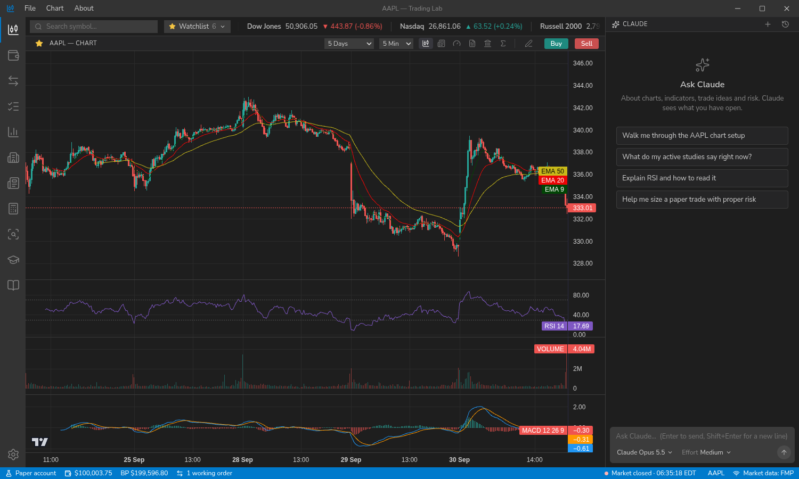
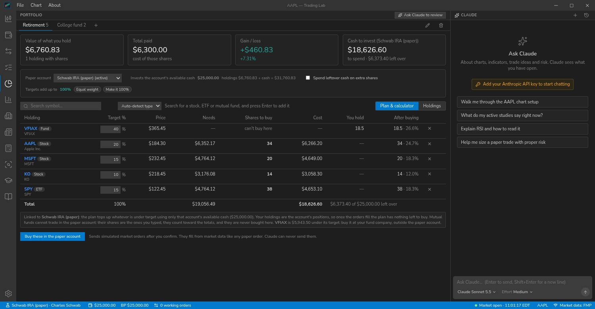
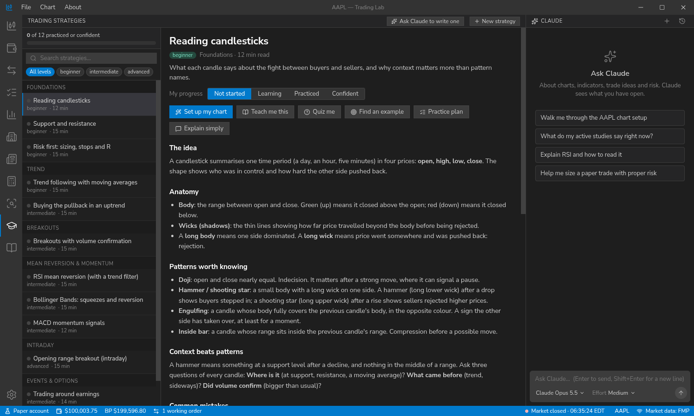
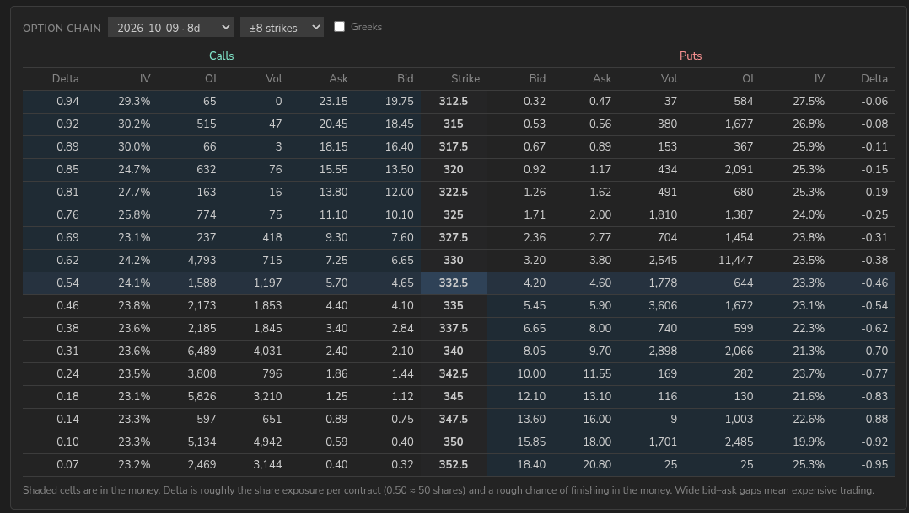
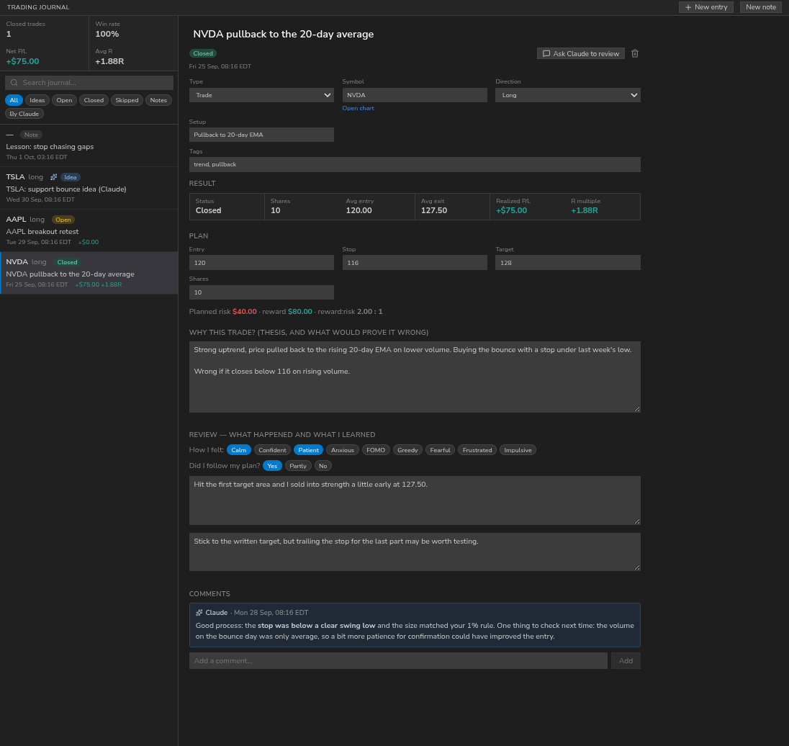

Charts that keep up
Candlestick, bar, line, area and Heikin Ashi charts from 1-minute to monthly, with 20+ studies, drawing tools, and live order lines you can drag. The chart refreshes itself while the market is open.
Educational software · no real money
Trading Lab is a desktop app with charts, a simulated brokerage account, a portfolio planner, a trading journal, a library of strategy lessons, and a Claude assistant that can see the chart you are looking at and teach from it.
Windows, macOS and Linux.

Real market data, a simulated account and a teacher who can read your screen.
Candlestick, bar, line, area and Heikin Ashi charts from 1-minute to monthly, with 20+ studies, drawing tools, and live order lines you can drag. The chart refreshes itself while the market is open.
Market, limit, stop, stop-limit and trailing orders, brackets and OCO, from a Think-or-Swim-style ticket. Fills come from real 1-minute bars. Keep several accounts that mirror your real ones.
Give each stock, ETF or mutual fund a target percentage and see how many shares your money buys. Track value and drift, link it to a paper account, and plan a partial sale to take profits.
A position calculator turns your risk, your own limits and the live price and ATR into a share count. A journal records the plan, your reasoning and the real result.
40+ strategy lessons on candlesticks, chart patterns, trend, breakouts, day trading, long-term investing and trading psychology, with 60+ candlestick patterns and one-click chart setups.
Quotes, analyst ratings, fundamentals, delayed options chains, symbol and market news, sector performance, a stock screener, and Senate and House trade disclosures.
Ask about your chart, your account, your journal or your portfolio. Claude can read the chart, draw on it and set up an order ticket for you to review. It can never place, change or cancel an order.
Everything is stored on your computer in one database, with one-click backup and restore. A full Help library, a built-in update check and a choice of default AI model are included.




Looking up the latest version…
Could not reach GitHub just now. Get the installers from the latest release page.
.dmg and drag the app to Applications. It is not notarized yet, so the first time, right-click it and choose Open. Choose Apple Silicon for an M-series Mac, Intel otherwise..deb with sudo apt install ./file.deb.The app checks GitHub for updates (you can turn that off in About) and never installs anything by itself. The Windows and macOS builds are newer than the Linux one; if something does not work, please open an issue.
Accounts, orders, the journal, watchlists, portfolios and settings live in a single local database. Your API keys are stored encrypted in your system keyring when one is available, and your market data key is only ever sent to the data provider.
The app talks to Financial Modeling Prep (market data), Cboe (delayed options), Anthropic (the assistant, only when you chat) and GitHub (the update check). When you chat, your message, a summary of what is on screen and any tool results Claude asks for are sent to Anthropic.